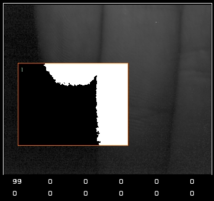
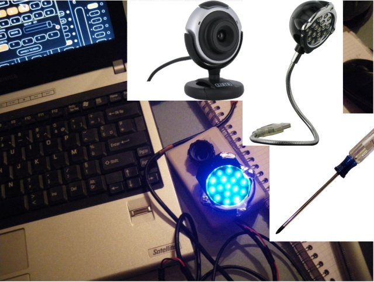
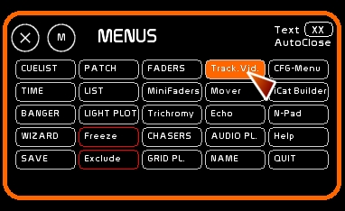
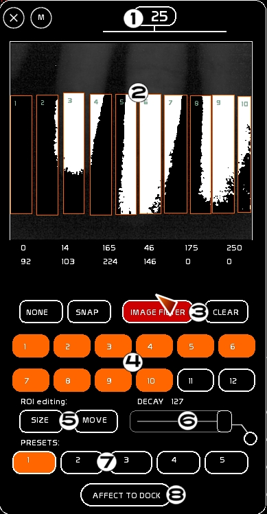
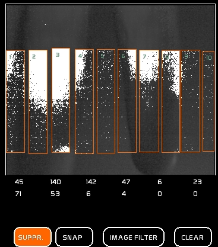
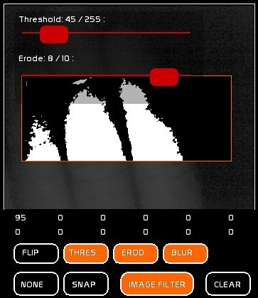
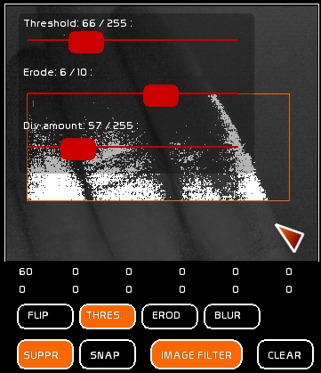
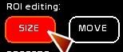
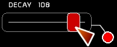

Please note that in order to use this feature it needs to be turned on in the General Tab of the configuration menu BEFORE WHITE CAT IS started.
The Tracking module enables you to change the intensity of your lights based on the signal from a simple webcam. White Cat receives the video stream from your webcam (WDM drivers only).
The image from this webcam is analyzed in real time and passed through different filters to obtain the information that can be translated to lighting levels for channels.
This process is done on different ROIs (Regions Of Interest) that can be user defined in the image.

There are 6 presets, each one containing 12 ROIs.
Each ROI is editable in terms of placement and size in the image, and you can assign different channels to each ROI. .
Each ROI may be activated/desactivated.
Overall, you can have 12×6 independent channel assignments.
6 presets enables you to change spotlights and configurations easily in a concert situation.
The calculation of a lighting level inside a ROI is based on this ratio: Number of pixels in the ROI divided by number of white pixels founded in the ROI.
Working with video tracking requires some special conditions:
For the moment, White Cat auto-connects to the first WDM camera driver found. To configure the camera, close White Cat and launch /utils/VIDCAP.exe.
In VIDCAP, select OPTIONS > VIDEO Format and select a maximum resolution of 352×258 or your CPU will be seriously slowed down. Apply and quit VIDCAP.
In White Cat, even though your camera may be a color camera, you will see the video stream in black and white.

To access Video Tracking, click [TRACK.] or press [F8].


Video tracking consists of 8 different parts (from top to bottom):
To see channels controlled by the webcam on stage, it needs, as every dynamic content:
! Be aware, unlike trichromy, there is only ONE output from video tracking. Video presets are just pre-selections of different channel routing.
Toggle it from [NONE] to [SUPPR]
You can make the background disappear by adjusting the THRESHOLD. This technique uses less computer resources. Unlike [SUPPR], where the image is subtracted from a referenced snapshot (background subtraction technique).
NONE is affected by the adjustment of the THRESHOLD in [IMAGE FILTERS]
If you are in a difficult environment where it is too bright (white ceiling, control room too brightly lit by audience lighting), you can use SUPPR mode. SUPPR enables you to take a reference image in the picture and subtract it from the video stream.
To use SUPPR:

General settings:
This is the recommended method. You can regulate the high-pass filter with THRESHOLD, until the background is completely black and keep your hand visible and white with the lamp near the lens.

After you have made a [SNAP] without your hand, with just the background, adjust the threshold and div. factor. Note that ROI levels are printed below. Those levels are in the 0-255 range (dmx).
A good calibration is based on 3 things: lighting of the hand/threshold/div-factor.
You need a ratio of 255, when the hand is covering a ROI, and 0 when it is not in the ROI.
DIV.Factor: the OpenCV operation behind this is DIV (dividing).

There are 6 video presets that you can select with the mouse or with the keyboard: [A] [Z] [E] [R] [T] [Y]. For those with English keyboards that's [Q] [W] [E] [R] [T] [Y] for you.
Each preset contains 12 ROIs, each one being customizable for each preset (size, position, channels assigned to the ROI).
To enable different movement types and lighting reactions, imagine:
Preset 1: 6 Blinders from stage left to stage right. Moving your hand will act laterally on the 6 ROIs. Your ROI placement will match the physical lighting implementation you see from the control room.
Preset 2: 8 toplights in a circle with an 8 ROI system placed in the image to match the physical implementation.
Preset 3: effect of clouds with PAR 64s, on 12 overlapping ROIs
… etc …
Use the [CLEAR] button in the video window.
Click Preset: all its ROI, size, position and channel assignments will be cleared.
Please note that each ROI, has a little number that shows its ID.
Each ROI may be toggled on/off with the mouse or with the keyboard:
[Q] [S] [D] [F] [G] [H] (on an English keyboard that is: [A] [S] [D] [F] [G] [H])
and
[W] [X] [C] [V] [B] [N] (on an English keyboard that is: [Z] [X] [C] [V] [B] [N])
When a ROI is ON, its outputted levels are activated.
You assign only a selection of channels in a ROI (not levels). Levels come from the calculations of video tracking.
! Be aware: the channel ROI assignments are specific to each Video Preset . Each preset contains 12 ROI, and there is no relationship from one preset to another.
To modify:
If the selected channel is already in the ROI it will be removed. If it is not yet present, it will be added to the ROI assignment.

Use the [CLEAR] button in the tracking video window. Click the ROI: size, position and channel assignments will be cleared.
Decay enables you to dampen in time and intensity the ROI reaction.
One of the principal problems in managing control by video image analysis is the method of fading away the values received.
Decay enables you to adjust on a time basis last value received from the OI analysis process.
When set to 0, nothing will occur. When moved, there is a pause.
When set to 127, the reaction will be immediately transmitted (raw reaction).
Set to 108, you will see a smoothing effect to the movement, you can ever so slightly touch the ROIs and see the levels gently reaching the last value received.

Decay is controlable in midi ( see midi configuration ).
Motorized midi control surfaces can send back its level.
ROI selection and preset selection are also midi assignable.